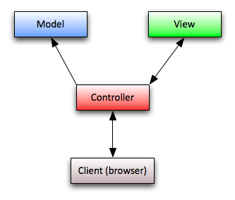

Web App Development
MVC, Zend, Yii, and beyond
Web Apps Team
- Ken
- Jeff *
- Jim *
- Tom
- Rodney
- Mia
- Laura
Number of Apps in our dev queue?
18
| Campus Directory |
Student Housing Online |
WCMS |
FixIt |
eText Library |
| OTSS |
ERS |
Volunteers SVC |
Student Services Portal |
Baytree Conference Room |
| Multicultural Career Center |
EOP |
SCOC |
GLTBI Library |
UCSC Mobile Framework |
| Dining Apps |
Financial Aid Calculator |
Surveys |
|
|
What are our needs
- Rapid development
- Train team members new to PHP & MVC frameworks
- Standardize: Abilty to make a team responsible for an app rather than an individual person
Rapid Development
Rapid application development (RAD) is a software development methodology that uses minimal planning in favor of rapid prototyping.
How do we achieve this?
- Choose a MVC web framework to develop in
- Develop a base application, and not start every project from scratch
What is a MVC framework
Model–View–Controller (MVC) is a software design pattern that separates the presentation layer from the logic layer.
What is a base application?
A base application is a pre-built application that is used as a starting point for new application development.
Aside from taping them to their seats... how do we train our team?
- Choose a MVC framework with strict coding standards (to promote good coding practice and to keep all apps familiar)
- Train team in the structure of our base application
- Let their skills develop as they work
Standardize
When anything is possible, it's easy to become overwhelmed.
So, how do we prepose to standardize the app dev process?
By creating starting points, not boundaries
This gives the project team a place to start, not a place to finish.
Key components of our base application
- familiar coding environment
- branded html/css themes
- shibboleth / login built in
- file upload
- WSYIWYG editors
- API / web service
- ajax tables
- ability to add more features over time
MVC web frameworks
Model-View-Controller

MVC web frameworks: History
This style of programming became popularized in early 2000's with Ruby on Rails. Since then every web language has tried to mimic the use of MVC development.
MVC web frameworks: PHP
- CodeIgniter
- Zend Framework
- CakePHP
- Symfony
- Yii
- FuelPHP
- and the list goes into the thousands
MVC web frameworks: PHP
Why not just write our own?
- Because we don't want to have to rely on one or two individuals.
- We can also utilize open source libraries and classes that other users of the framework wrote, so every new feature doesn't have to be written from scratch.
- Being a part of a community allows us to share and communicate with others.
MVC web frameworks: PHP
Since there are thousands, which do we choose?
- Lightweight with a small code base
- Fast (development & performance)
- Strict coding standards
- Active healthy community
- Good documentation
ZF features:
- Large code base
- Sluggish performance
- Loose coding standards
- Poor documentation
Since this doesn't match our development needs we started searching for a more suitable MVC framework.
This led us to the Yii Framework
Yii features:
- Lightweight with a small code base
- Fast (development & performance)
- Strict coding standards
- Active healthy community
- Good documentation